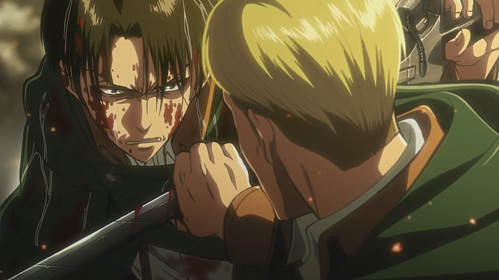
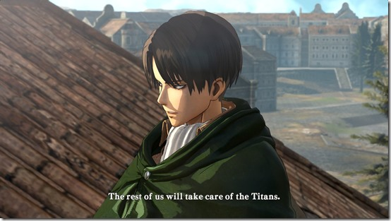
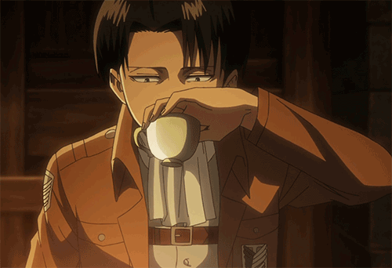
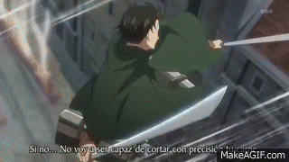
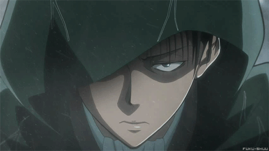

10 Fakta Unik Tentang Levi Ackerman Yang Jarang Diketahui Fans!

Levi punya “adik” perempuan? Pernah ingin membunuh Erwin? Lalu, seperti apakah wanita idaman Levi? Inilah 10 fakta Levi Ackerman yang jarang diketahui oleh fans!
Levi atau bernama lengkap Levi Ackerman adalah salah satu karakter paling populer dalam serial Attack on Titan—bahkan bisa dibilang paling populer. Meskipun memiliki tubuh yang pendek, tetapi squad captain di Special Operation Squad dan dalam Survey Corps ini memiliki kemampuan yang tidak dapat diremehkan. Dalam serial manga yang dibuat oleh Hajime Isayama sendiri, Levi mendapatkan sebutan sebagai Humanity Strongest Soldier (Tentara Terkuat Manusia). Meski sering disorot di manga dan anime, tetapi ada beberapa fakta Levi Ackerman yang jarang diketahui fans, lho!
1. Nama Levi Memiliki Arti “Pemburu”

Nama Levi memiliki banyak sekali arti. Levi sendiri berasal dari bahasa Hebrew yang berarti ‘bergabung’. Akan tetapi, jika nama Levi diromanjikan memiliki arti ‘kebangkitan’ dalam bahasa Jepang. Selain dua arti di atas, Levi juga merupakan bentuk nama kecil dari ‘Lavente’ di Hungaria dan memiliki arti ‘makhluk kecil’. Kalau di Slavia sendiri, Levi adalah bentuk nama kecil dari ‘Lovanta’ yang berarti pemburu.
2. Levi Awalnya Adalah Seorang Kriminal

Dalam manga spin-off berjudul Attack on Titan: No Regrets yang merupakan manga prekuel dari Attack on Titan, diceritakan bahwa Levi adalah seorang kriminal berbahaya. Jauh sebelum bergabung dengan Survey Corps, Levi tinggal di sebuah kota bawah tanah ”The Underground/Chikagai‘ di bawah kota Mitras. Kota ini sangat miskin dan sarang bagi para penjahat berbahaya. Dia memiliki kelompok di mana setiap anggota menganggap Levi sebagai ketua. Kelompok Levi ini terbukti cukup berbahaya karena bahkan Military Police Bridgade tidak sanggup menghadapi Levi dkk. Levi sendiri baru takluk ketika dia dan teman-temannya tertangkap oleh Erwin dan Survey Corps.
3. Punya “Adik” Perempuan Bernama Isabel Magnolia

Levi memiliki “adik” bernama Isabel Magnolia. Bukan adik kandung, melainkan seorang teman yang menganggap Levi sebagai sosok kakak yang dihormati. Isabel begitu menghormati Levi hingga memanggilnya ‘nii-chan/san‘ (aniki di anime). Levi sendiri sangat protective terhadap Isabel, bahkan dia sampai membunuh orang-orang yang telah melukai dan memotong rambut Isabel. Hii…
4. Levi Pernah Ingin Membunuh Erwin
Hubungan Levi dan Erwin tidaklah sedekat seperti dalam manga Attack on Titan saat ini. Dalam manga Attack on Titan: No Regrets, diceritakan bahwa Levi ditangkap oleh Erwin dan dipaksa untuk ikut Survey Corps. Levi setuju bergabung tetapi masih menyimpan dendam pada Erwin. Dia pun berniat untuk membunuh Erwin. Akan tetapi, seiring berjalannya cerita, Levi pun melupakan keinginannya untuk balas dendam dan menjadi pendukung penuh Erwin. Dan keduanya pun menjadi sahabat dekat seperti yang kita ketahui saat ini.
5. Levi Lebih Tua dari pada Kelihatannya
Umur Levi adalah salah satu misteri yang membuat banyak fans penasaran. Dalam interview, Isayama sang kreator sendiri hanya memberikan petunjuk bahwa Levi lebih tua daripada kelihatannya. Lalu, pada Februari 2016, Isayama kembali diwawancarai pada acara Attack on Titan “The Real” Theme Park dan mengatakan bahwa umur Levi adalah hampir 40 tahun. Akan tetapi, Marina Inoue (seiyuu dari Armin Artlet) mengatakan bahwa Isayama salah menjawab karena saat diwawancarai itu dia gugup. Isayama kemudian meminta Inoue untuk mengatakan bahwa umur Levi adalah awal 30 tahunan (antara 30-35 tahun)!
6. Tidur Sehari 2-3 Jam Sambil Duduk!

Isayama pernah mengatakan bahwa Levi mengidap insomia ringan. Dalam sehari, Levi hanya tidur selama 2-3 jam dan dia tidak pernah berganti pakaian ketika tidur, pun lebih suka tidur sambil duduk di kursi daripada di kasur. Ketika ditanya apa yang ingin dia katakan kepada Levi jika bertemu di dunia nyata, Isayama menjawab: “Cepatlah tidur!”
7. Levi Berkeinginan Untuk Membuka Kedai Teh
Berbeda dengan Erwin yang memiliki impian untuk memperjuangkan umat manusia di dalam dinding, keinginan Levi ternyata jauh lebih sederhana dan kasual. Dalam sebuah interview, Isayama mengatakan bahwa Levi memiliki impian untuk membuka sebuah Toko Teh. Tampaknya Levi ini agak terobsesi dengan teh. Hal itu didukung dengan fakta bahwa dia menyukai Teh Hitam dan suka mengoleksi daun teh.
8. Levi Suka Wanita Bertubuh Tinggi

Khusus untuk kamu para perempuan yang mengidolakan Levi nih. Pernah kepikiran nggak, Levi itu suka wanita yang seperti apa? Dalam sebuah wawancara bersama Hajime Isayama, dia pernah ditanyai ‘tipe wanita seperti apa yang disukai oleh Levi?’ Isayama pun menjawab:“Tipe wanita yang dia sukai? Karena dia pendek, orang pendek lebih tertarik pada orang bertubuh tinggi… Jadi kurasa dia menyukai wanita bertubuh tinggi.”
9. Minimal Pernah Membunuh 34 Titan
Pernahkah kamu menghitung total Titan yang sudah dibunuh oleh Levi. Yah, sejauh ini yang terlihat di manga, Levi sudah membunuh total 34 Titan, lho! Perlu diingat, bahwa jumlah ini adalah jumlah yang terlihat di manga saja. Jadi, angka ini belum termasuk dengan jumlah Titan yang dia bunuh sebelum kemunculannya di manga Attack on Titan. Oh, dan lagi, Levi sejauh ini telah menghadapi 3 dari 4 Titan Shifter yang ada: Annie, Reiner (dalam wujud manusia) dan Zeke. Cuma Bertolt yang belum pernah dia hadapi. Dan sayangnya, seluruh Titan-Shifters ini tidak sampai dibunuh oleh Captain Levi.
10. “Kurang Asia” Alasan Levi Tidak Muncul di Film Live-Action
Jika kalian menonton film live-action Attack on Titan, kalian pasti akan menyadari bahwa film tersebut sangatlah berbeda dengan versi manga originalnya. Mulai dari setting, jalan cerita, hingga tokoh-tokoh yang ada hampir semuanya berbeda dengan versi original. Akan tetapi, mungkin yang paling membuat fans geram adalah tidak adanya sosok Levi Ackerman dalam film tersebut. Usut punya usut nih, ternyata menghilangnya Levi dari film juga secara tidak langsung karena permintaan sang kreator Attack on Titan Hajime Isayama. Dia ingin menciptakan sebuah film Attack on Titan di mana karakter dan setting-nya adalah Jepang. Nah, Levi sendiri, jika dilihat dari namanya saja, sudah sangat tidak Jepang. Maka, Tomohiro Machiyama yang dipilih sebagai penulis naskah pun memutuskan untuk menendang Levi dari live-action. :(
Itulah tadi beberapa 10 fakta Levi Ackerman yang jarang diketahui oleh fans. Apakah Levi ini merupakan karakter favoritmu? Jangan lupa untuk bookmark serta share artikel ini agar semakin banyak teman-teman yang tahu. Arigatou Gozaimasuu..
Web Anime
web yang berisi tentang artikel,informasi fakta unik seputar anime.
Email:kushitoukarivaille31224@gmail.com
WA:083175624575
Menu
Media Sosial
Copyright © 2019 - Web Anime